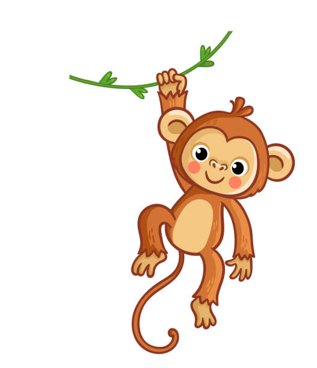

<mat-toolbar color="accent"
  ><span>KIKI</span><span class="spacer"></span
  ><button mat-button><mat-icon>subject</mat-icon> Fächer</button
  ><button mat-button><mat-icon>task</mat-icon> Meine Aufgaben</button>
  <button mat-icon-button routerLink="/chat"><mat-icon>chat</mat-icon></button>
  <button mat-icon-button><mat-icon>settings</mat-icon></button>
  <button mat-icon-button>
    <mat-icon>power_settings_new</mat-icon>
  </button></mat-toolbar
>
<router-outlet></router-outlet>
